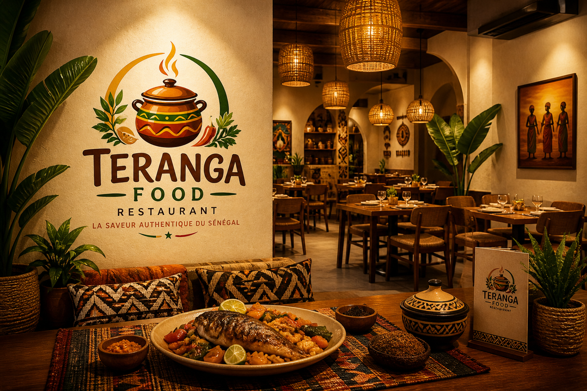
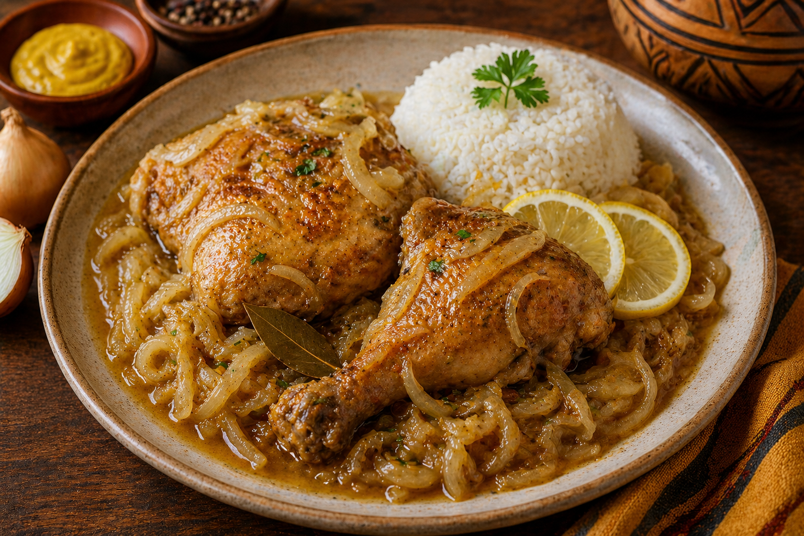
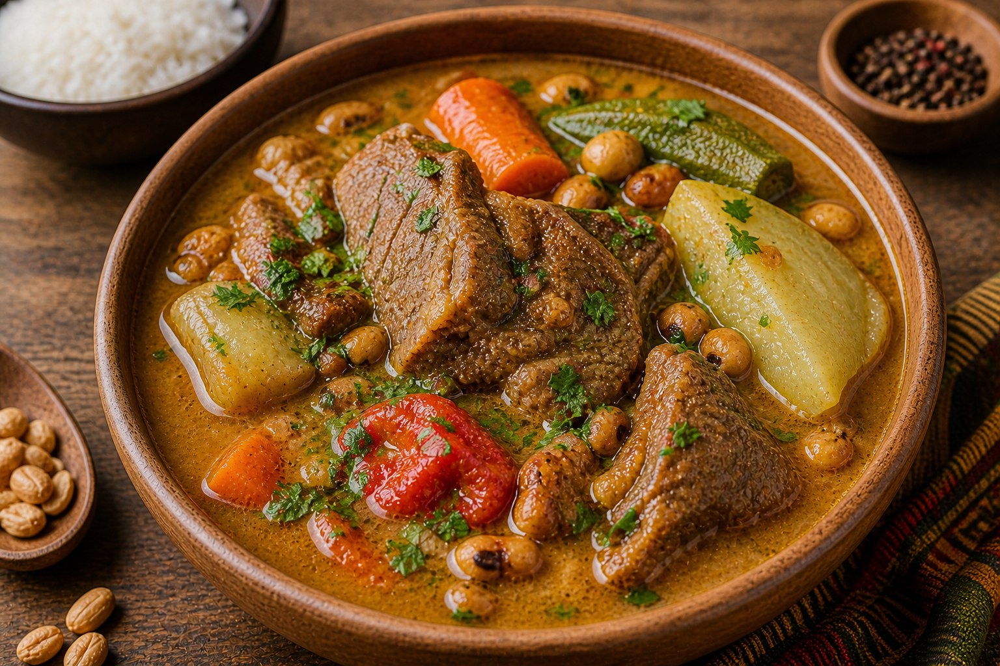
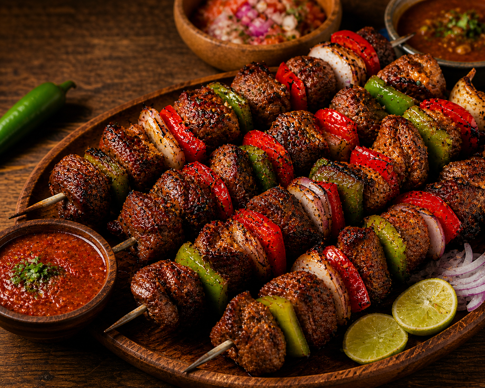

La saveur authentique du Sénégal.
Plongez dans l’univers de la cuisine sénégalaise avec des plats faits maison, riches en saveurs et en traditions. Chez Teranga Food, chaque bouchée est une invitation au voyage.
Bienvenue chez Teranga Food
Découvrez l'essence de la cuisine sénégalaise, où chaque plat raconte une histoire de tradition, d'hospitalité et de saveurs authentiques. Notre équipe passionnée vous invite à un voyage gustatif inoubliable au cœur du Sénégal, où la « Teranga » n'est pas seulement un mot, mais un art de vivre.

Nos plats populaire

Thiéboudienne

Yassa poulet

Mafé

Soupou Kandia

Brochette

Boisson braisé
:Terange-Food-Sn
Adresse
Point E
Horaires d'ouverture
Lundi - Dimanche:9h-22h
Contact
+277 77 663 84 77
Teranga@gmail.com